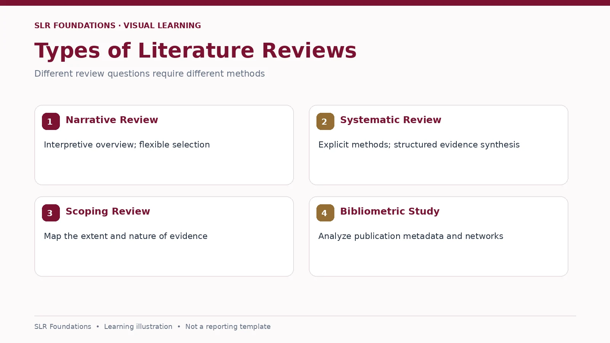

SLR FOUNDATIONS · PRE-HANDS-ON LEARNING
SLR vs Other Research Articles
Learn to recognise different research publication types

Compare article types
| Type | Primary purpose | Typical method |
|---|---|---|
| Original research | Report findings from a new study | Experiment, survey, interviews or other primary analysis |
| Narrative review | Discuss a body of literature | Flexible selection and narrative interpretation |
| Systematic literature review | Answer focused questions through systematic evidence synthesis | Planned search, eligibility criteria, appraisal when appropriate and transparent synthesis |
| Scoping review | Map the extent and nature of evidence | Systematic mapping of concepts, sources and gaps |
| Bibliometric analysis | Study publication and citation patterns | Metadata and network/statistical analysis |
| Meta-analysis | Statistically pool compatible quantitative study results | Effect-size synthesis, often within a systematic review |
A systematic review does not require a meta-analysis, and a bibliometric study is not automatically an SLR.
Practice: Identify the article type
Example A: Researchers recruit participants and measure their task performance. Original research.
Example B: Authors report explicit databases, search dates, screening criteria and a structured synthesis. Likely systematic review; confirm the full methods.
Example C: Authors map co-citation networks and keyword co-occurrence. Bibliometric analysis.